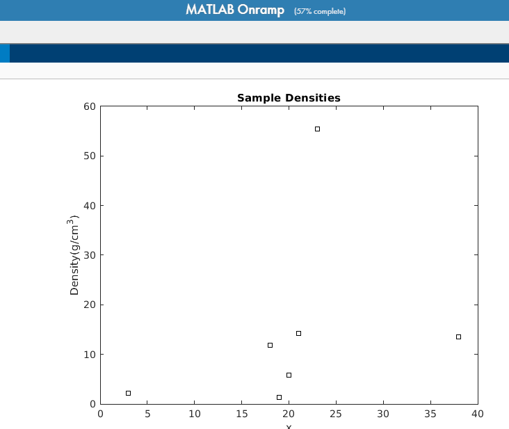

<!DOCTYPE html>
<html>
<head><meta name="generator" content="Hexo 3.8.0">
  <meta charset="utf-8">
  
  <title>matlab学习小结2-图标操作 | Life-long Learning</title>
  <meta name="viewport" content="width=device-width, initial-scale=1, maximum-scale=1">
  
    <meta name="keywords" content="MATLAB">
  
  
  
  
  <meta name="description" content="这一部分主要介绍MATLAB的plot图标操作。 基础操作我们可以使用1doc  plot 来查看MATLAB的任意方法的使用说明文档。 新建一个折线图： 123x=0:2:20y=0:4:40plot(x,y，‘-or’)  图形属性第三个参数是用来自哪个图表的属性：    Value Mean     - 实线（默认）   – 虚线   -. 点划线   : 点线   ‘+’ 加号   ‘o’">
<meta name="keywords" content="MATLAB">
<meta property="og:type" content="article">
<meta property="og:title" content="MATLAB学习小结2-图标操作">
<meta property="og:url" content="https://jasonlansus.gitee.io/MATLAB学习小结2.html">
<meta property="og:site_name" content="Life-long Learning">
<meta property="og:description" content="这一部分主要介绍MATLAB的plot图标操作。 基础操作我们可以使用1doc  plot 来查看MATLAB的任意方法的使用说明文档。 新建一个折线图： 123x=0:2:20y=0:4:40plot(x,y，‘-or’)  图形属性第三个参数是用来自哪个图表的属性：    Value Mean     - 实线（默认）   – 虚线   -. 点划线   : 点线   ‘+’ 加号   ‘o’">
<meta property="og:locale" content="default">
<meta property="og:image" content="https://jasonlansus.gitee.io/image/matlab1.png">
<meta property="og:image" content="https://jasonlansus.gitee.io/image/matlab2.png">
<meta property="og:updated_time" content="2020-09-14T07:35:37.793Z">
<meta name="twitter:card" content="summary">
<meta name="twitter:title" content="MATLAB学习小结2-图标操作">
<meta name="twitter:description" content="这一部分主要介绍MATLAB的plot图标操作。 基础操作我们可以使用1doc  plot 来查看MATLAB的任意方法的使用说明文档。 新建一个折线图： 123x=0:2:20y=0:4:40plot(x,y，‘-or’)  图形属性第三个参数是用来自哪个图表的属性：    Value Mean     - 实线（默认）   – 虚线   -. 点划线   : 点线   ‘+’ 加号   ‘o’">
<meta name="twitter:image" content="https://jasonlansus.gitee.io/image/matlab1.png">
  

  

  <link rel="icon" href="/css/images/mylogo.png">
  <link rel="apple-touch-icon" href="/css/images/mylogo.png">
  
    <link href="//fonts.googleapis.com/css?family=Source+Code+Pro" rel="stylesheet" type="text/css">
  
  <link href="https://fonts.googleapis.com/css?family=Open+Sans|Montserrat:700" rel="stylesheet" type="text/css">
  <link href="https://fonts.googleapis.com/css?family=Roboto:400,300,300italic,400italic" rel="stylesheet" type="text/css">
  <link href="//netdna.bootstrapcdn.com/font-awesome/4.0.3/css/font-awesome.css" rel="stylesheet">
  <style type="text/css">
    @font-face{font-family:futura-pt; src:url("css/fonts/FuturaPTBold.otf") format("woff");font-weight:500;font-style:normal;}
    @font-face{font-family:futura-pt-light; src:url("css/fonts/FuturaPTBook.otf") format("woff");font-weight:lighter;font-style:normal;}
    @font-face{font-family:futura-pt-italic; src:url("css/fonts/FuturaPTBookOblique.otf") format("woff");font-weight:400;font-style:italic;}
}
  </style>
  <link rel="stylesheet" href="/css/style.css">

  <script src="/js/jquery-3.1.1.min.js"></script>
  <script src="/js/bootstrap.js"></script>

  <!-- Bootstrap core CSS -->
  <link rel="stylesheet" href="/css/bootstrap.css">

  
    <link rel="stylesheet" href="/css/dialog.css">
  

  

  
    <link rel="stylesheet" href="/css/header-post.css">
  

  
  
  
    <link rel="stylesheet" href="/css/vdonate.css">
  

</head></html>


  <body data-spy="scroll" data-target="#toc" data-offset="50">


  
  <div id="container">
    <div id="wrap">
      
        <header>

    <div id="allheader" class="navbar navbar-default navbar-static-top" role="navigation">
        <div class="navbar-inner">
          
          <div class="container"> 
            <button type="button" class="navbar-toggle" data-toggle="collapse" data-target=".navbar-collapse">
              <span class="sr-only">Toggle navigation</span>
              <span class="icon-bar"></span>
              <span class="icon-bar"></span>
              <span class="icon-bar"></span>
            </button>

            
              <a class="brand" style="
                 margin-top: 0px;" href="#" data-toggle="modal" data-target="#myModal">
                  
              </a>
            
            
            <div class="navbar-collapse collapse">
              <ul class="hnav navbar-nav">
                
                  <li> <a class="main-nav-link" href="/">Home</a> </li>
                
                  <li> <a class="main-nav-link" href="/archives">Archives</a> </li>
                
                  <li> <a class="main-nav-link" href="/categories">Categories</a> </li>
                
                  <li> <a class="main-nav-link" href="/tags">Tags</a> </li>
                
                  <li> <a class="main-nav-link" href="/about/">About</a> </li>
                
                  <li><div id="search-form-wrap">

    <form class="search-form">
        <input type="text" class="ins-search-input search-form-input" placeholder>
        <button type="submit" class="search-form-submit"></button>
    </form>
    <div class="ins-search">
    <div class="ins-search-mask"></div>
    <div class="ins-search-container">
        <div class="ins-input-wrapper">
            <input type="text" class="ins-search-input" placeholder="Type something...">
            <span class="ins-close ins-selectable"><i class="fa fa-times-circle"></i></span>
        </div>
        <div class="ins-section-wrapper">
            <div class="ins-section-container"></div>
        </div>
    </div>
</div>
<script>
(function (window) {
    var INSIGHT_CONFIG = {
        TRANSLATION: {
            POSTS: 'Posts',
            PAGES: 'Pages',
            CATEGORIES: 'Categories',
            TAGS: 'Tags',
            UNTITLED: '(Untitled)',
        },
        ROOT_URL: '/',
        CONTENT_URL: '/content.json',
    };
    window.INSIGHT_CONFIG = INSIGHT_CONFIG;
})(window);
</script>
<script src="/js/insight.js"></script>

</div></li>
            </ul></div>
          </div>
                
      </div>
    </div>

</header>


      
            
      <div id="content" class="outer">
        
          <section id="main" style="float:none;"><article id="post-MATLAB学习小结2" style="width: 75%; float:left;" class="article article-type-post" itemscope itemprop="blogPost">
  <div id="articleInner" class="article-inner">
    
    
      <header class="article-header">
        
  
    <h1 class="thumb" itemprop="name">
      MATLAB学习小结2-图标操作
    </h1>
  

      </header>
    
    <div class="article-meta">
      
	<a href="/MATLAB学习小结2.html" class="article-date">
	  <time datetime="2019-10-22T05:51:21.000Z" itemprop="datePublished">2019-10-22</time>
	</a>

      
    <a class="article-category-link" href="/categories/机器学习/">机器学习</a>

      
	<a class="article-views">
	<span id="busuanzi_container_page_pv">
		PV:<span id="busuanzi_value_page_pv"></span>
	</span>
	</a>

      

    </div>
	
    <div class="article-entry" itemprop="articleBody">
      
        <p>这一部分主要介绍<code>MATLAB</code>的<code>plot</code>图标操作。</p>
<h2 id="基础操作"><a href="#基础操作" class="headerlink" title="基础操作"></a>基础操作</h2><p>我们可以使用<br><figure class="highlight plain"><table><tr><td class="gutter"><pre><span class="line">1</span><br></pre></td><td class="code"><pre><span class="line">doc  plot</span><br></pre></td></tr></table></figure></p>
<p>来查看<code>MATLAB</code>的任意方法的使用说明文档。</p>
<p>新建一个折线图：</p>
<figure class="highlight plain"><table><tr><td class="gutter"><pre><span class="line">1</span><br><span class="line">2</span><br><span class="line">3</span><br></pre></td><td class="code"><pre><span class="line">x=0:2:20</span><br><span class="line">y=0:4:40</span><br><span class="line">plot(x,y，‘-or’)</span><br></pre></td></tr></table></figure>
<p></p>
<h2 id="图形属性"><a href="#图形属性" class="headerlink" title="图形属性"></a>图形属性</h2><p>第三个参数是用来自哪个图表的属性：</p>
<table>
<thead>
<tr>
<th style="text-align:center">Value</th>
<th style="text-align:center">Mean</th>
</tr>
</thead>
<tbody>
<tr>
<td style="text-align:center">-</td>
<td style="text-align:center">实线（默认）</td>
</tr>
<tr>
<td style="text-align:center">–</td>
<td style="text-align:center">虚线</td>
</tr>
<tr>
<td style="text-align:center">-.</td>
<td style="text-align:center">点划线</td>
</tr>
<tr>
<td style="text-align:center">:</td>
<td style="text-align:center">点线</td>
</tr>
<tr>
<td style="text-align:center">‘+’</td>
<td style="text-align:center">加号</td>
</tr>
<tr>
<td style="text-align:center">‘o’</td>
<td style="text-align:center">圆圈</td>
</tr>
<tr>
<td style="text-align:center">‘*’</td>
<td style="text-align:center">星号</td>
</tr>
<tr>
<td style="text-align:center">‘.’</td>
<td style="text-align:center">点</td>
</tr>
<tr>
<td style="text-align:center">‘x’</td>
<td style="text-align:center">叉号</td>
</tr>
<tr>
<td style="text-align:center">‘square’ 或 ‘s’</td>
<td style="text-align:center">方形</td>
</tr>
<tr>
<td style="text-align:center">‘diamond’ 或 ‘d’</td>
<td style="text-align:center">菱形</td>
</tr>
<tr>
<td style="text-align:center">‘^’</td>
<td style="text-align:center">上三角</td>
</tr>
<tr>
<td style="text-align:center">‘v’</td>
<td style="text-align:center">下三角</td>
</tr>
<tr>
<td style="text-align:center">‘&gt;’</td>
<td style="text-align:center">右三角</td>
</tr>
<tr>
<td style="text-align:center">‘&lt;’</td>
<td style="text-align:center">左三角</td>
</tr>
<tr>
<td style="text-align:center">‘pentagram’ 或 ‘p’</td>
<td style="text-align:center">五角星（五角形）</td>
</tr>
<tr>
<td style="text-align:center">‘hexagram’ 或 ‘h’</td>
<td style="text-align:center">六角星（六角形）</td>
</tr>
<tr>
<td style="text-align:center">r</td>
<td style="text-align:center">红色</td>
</tr>
<tr>
<td style="text-align:center">g</td>
<td style="text-align:center">绿色</td>
</tr>
<tr>
<td style="text-align:center">b</td>
<td style="text-align:center">蓝色</td>
</tr>
<tr>
<td style="text-align:center">c</td>
<td style="text-align:center">青蓝色</td>
</tr>
<tr>
<td style="text-align:center">m</td>
<td style="text-align:center">品红色</td>
</tr>
<tr>
<td style="text-align:center">y</td>
<td style="text-align:center">黄色</td>
</tr>
<tr>
<td style="text-align:center">k</td>
<td style="text-align:center">黑色</td>
</tr>
<tr>
<td style="text-align:center">w</td>
<td style="text-align:center">白色</td>
</tr>
</tbody>
</table>
<p>我们如果想在上一个所画图上添加第二个折线图，就可以使用<code>hold</code>函数：<br><figure class="highlight plain"><table><tr><td class="gutter"><pre><span class="line">1</span><br><span class="line">2</span><br><span class="line">3</span><br></pre></td><td class="code"><pre><span class="line">hold on</span><br><span class="line">plot(x/2,y)</span><br><span class="line">hold off</span><br></pre></td></tr></table></figure></p>
<h2 id="线条属性"><a href="#线条属性" class="headerlink" title="线条属性"></a>线条属性</h2><ul>
<li>p.Color（可以使用英语缩写名称、十六进制和RGB三元组）<figure class="highlight plain"><table><tr><td class="gutter"><pre><span class="line">1</span><br><span class="line">2</span><br><span class="line">3</span><br></pre></td><td class="code"><pre><span class="line">p = plot(1:10);</span><br><span class="line">c = p.Color;</span><br><span class="line">p.Color = &apos;red&apos;;</span><br></pre></td></tr></table></figure>
</li>
</ul>
<ul>
<li>LineWidth<figure class="highlight plain"><table><tr><td class="gutter"><pre><span class="line">1</span><br><span class="line">2</span><br><span class="line">3</span><br></pre></td><td class="code"><pre><span class="line">p = plot(1:10);</span><br><span class="line">c = p.LineWidth;</span><br><span class="line">c = 5;</span><br></pre></td></tr></table></figure>
</li>
</ul>
<ul>
<li><p>LineJoin 线条边角的样式</p>
<p>  ‘round’ （默认） 圆角 | ‘miter’  尖角 | ‘chamfer’  钝角</p>
</li>
</ul>
<p>剩余的属性可以见网页<br><a href="https://ww2.mathworks.cn/help/matlab/ref/linespec.html" target="_blank" rel="noopener">line属性</a></p>
<h2 id="x-y轴-label"><a href="#x-y轴-label" class="headerlink" title="x.y轴 label"></a>x.y轴 label</h2><p>标题设置方法是title<br><figure class="highlight plain"><table><tr><td class="gutter"><pre><span class="line">1</span><br><span class="line">2</span><br><span class="line">3</span><br><span class="line">4</span><br></pre></td><td class="code"><pre><span class="line">title(&apos;Sample Densities&apos;)</span><br><span class="line">  </span><br><span class="line"> ylabel(&apos;Density(g/cm^3)&apos;)</span><br><span class="line"> xlabel(&apos;x&apos;)</span><br></pre></td></tr></table></figure></p>
<p></p>

      
    </div>
    <footer class="article-footer">
      
        <div id="donation_div"></div>

<script src="/js/vdonate.js"></script>
<script>
var a = new Donate({
  title: '如果觉得我的文章对您有用，请随意打赏。您的支持将鼓励我继续创作!', // 可选参数，打赏标题
  btnText: 'Donate', // 可选参数，打赏按钮文字
  el: document.getElementById('donation_div'),
  wechatImage: '/css/images/wtchat_pay.png',
  alipayImage: '/css/images/alipay.jpg'
});
</script>
      
      
      <div>
        <ul class="post-copyright">
          <li class="post-copyright-author">
          <strong>Post author:  </strong>LANSUS
          </li>
          <li class="post-copyright-link">
          <strong>Post link:  </strong>
          <a href="/MATLAB学习小结2.html" target="_blank" title="MATLAB学习小结2-图标操作">https://jasonlansus.gitee.io/MATLAB学习小结2.html</a>
          </li>
          <li class="post-copyright-license">
            <strong>Copyright Notice:   </strong>
            All articles in this blog are licensed under <a rel="license" href="https://creativecommons.org/licenses/by-nc-nd/4.0/" target="_blank" title="Attribution-NonCommercial-NoDerivatives 4.0 International (CC BY-NC-ND 4.0)">CC BY-NC-ND 4.0</a>
            unless stating additionally.
          </li>
         
        </ul>
<div>
</div></div>
      
      
        
	<div id="comment">
		<!-- 来必力City版安装代码 -->
		<div id="lv-container" data-id="city" data-uid="MTAyMC80Mzk3My8yMDUwOQ==">
		<script type="text/javascript">
		   (function(d, s) {
		       var j, e = d.getElementsByTagName(s)[0];

		       if (typeof LivereTower === 'function') { return; }

		       j = d.createElement(s);
		       j.src = 'https://cdn-city.livere.com/js/embed.dist.js';
		       j.async = true;

		       e.parentNode.insertBefore(j, e);
		   })(document, 'script');
		</script>
		<noscript>为正常使用来必力评论功能请激活JavaScript</noscript>
		</div>
		<!-- City版安装代码已完成 -->
	</div>


      
      
        
  <ul class="article-tag-list"><li class="article-tag-list-item"><a class="article-tag-list-link" href="/tags/MATLAB/">MATLAB</a></li></ul>

      

    </footer>
  </div>
  
    
<nav id="article-nav">
  
    <a href="/pandas使用总结.html" id="article-nav-newer" class="article-nav-link-wrap">
      <strong class="article-nav-caption">Newer</strong>
      <div class="article-nav-title">
        
          深度学习之路3:Pandas使用总结
        
      </div>
    </a>
  
  
    <a href="/MATLAB学习小结1.html" id="article-nav-older" class="article-nav-link-wrap">
      <strong class="article-nav-caption">Older</strong>
      <div class="article-nav-title">MATLAB学习小结1</div>
    </a>
  
</nav>

  
  </article>

<!-- Table of Contents -->

  <aside id="toc-sidebar">
    <div id="toc" class="toc-article">
    <strong class="toc-title">Contents</strong>
    
        <ol class="nav"><li class="nav-item nav-level-2"><a class="nav-link" href="#基础操作"><span class="nav-number">1.</span> <span class="nav-text">基础操作</span></a></li><li class="nav-item nav-level-2"><a class="nav-link" href="#图形属性"><span class="nav-number">2.</span> <span class="nav-text">图形属性</span></a></li><li class="nav-item nav-level-2"><a class="nav-link" href="#线条属性"><span class="nav-number">3.</span> <span class="nav-text">线条属性</span></a></li><li class="nav-item nav-level-2"><a class="nav-link" href="#x-y轴-label"><span class="nav-number">4.</span> <span class="nav-text">x.y轴 label</span></a></li></ol>
    
    </div>
  </aside>
 

</section>
        
      </div>
      
      <footer id="footer">
  

  <div class="container">
      	<div class="row">
		 <p id="copyRightEn">Copyright &copy; 2016 - 2020 Life-long Learning All Rights Reserved.</p>
	      
	      
    		<p class="busuanzi_uv">
				UV : <span id="busuanzi_value_site_uv"></span> |  
				PV : <span id="busuanzi_value_site_pv"></span>
		    </p>
  		   
		</div>
		

		
  </div>

</footer>


<!-- min height -->

<script>
    var wrapdiv = document.getElementById("wrap");
    var contentdiv = document.getElementById("content");
    var allheader = document.getElementById("allheader");

    wrapdiv.style.minHeight = document.body.offsetHeight + "px";
    if (allheader != null) {
      contentdiv.style.minHeight = document.body.offsetHeight - allheader.offsetHeight - document.getElementById("footer").offsetHeight + "px";
    } else {
      contentdiv.style.minHeight = document.body.offsetHeight - document.getElementById("footer").offsetHeight + "px";
    }
</script>
    </div>
    <!-- <nav id="mobile-nav">
  
    <a href="/" class="mobile-nav-link">Home</a>
  
    <a href="/archives" class="mobile-nav-link">Archives</a>
  
    <a href="/categories" class="mobile-nav-link">Categories</a>
  
    <a href="/tags" class="mobile-nav-link">Tags</a>
  
    <a href="/about/" class="mobile-nav-link">About</a>
  
</nav> -->
    

<!-- mathjax config similar to math.stackexchange -->

<script type="text/x-mathjax-config">
  MathJax.Hub.Config({
    tex2jax: {
      inlineMath: [ ['$','$'], ["\\(","\\)"] ],
      processEscapes: true
    }
  });
</script>

<script type="text/x-mathjax-config">
    MathJax.Hub.Config({
      tex2jax: {
        skipTags: ['script', 'noscript', 'style', 'textarea', 'pre', 'code']
      }
    });
</script>

<script type="text/x-mathjax-config">
    MathJax.Hub.Queue(function() {
        var all = MathJax.Hub.getAllJax(), i;
        for(i=0; i < all.length; i += 1) {
            all[i].SourceElement().parentNode.className += ' has-jax';
        }
    });
</script>

<script type="text/javascript" src="https://cdnjs.cloudflare.com/ajax/libs/mathjax/2.7.1/MathJax.js?config=TeX-AMS-MML_HTMLorMML">
</script>


  <link rel="stylesheet" href="/fancybox/jquery.fancybox.css">
  <script src="/fancybox/jquery.fancybox.pack.js"></script>


<script src="/js/scripts.js"></script>


  <script src="/js/dialog.js"></script>


	<div style="display: none;">
    <script src="https://s95.cnzz.com/z_stat.php?id=1277362972&web_id=1277362972" language="JavaScript"></script>
  </div>


	<script async src="//busuanzi.ibruce.info/busuanzi/2.3/busuanzi.pure.mini.js">
	</script>


  </div>

  <div class="modal fade" id="myModal" tabindex="-1" role="dialog" aria-labelledby="myModalLabel" aria-hidden="true" style="display: none;">
  <div class="modal-dialog">
    <div class="modal-content">
      <div class="modal-header">
        <h2 class="modal-title" id="myModalLabel">设置</h2>
      </div>
      <hr style="margin-top:0px; margin-bottom:0px; width:80%; border-top: 3px solid #000;">
      <hr style="margin-top:2px; margin-bottom:0px; width:80%; border-top: 1px solid #000;">


      <div class="modal-body">
          <div style="margin:6px;">
            <a data-toggle="collapse" data-parent="#accordion" href="#collapseOne" onclick="javascript:setFontSize();" aria-expanded="true" aria-controls="collapseOne">
              正文字号大小
            </a>
          </div>
          <div id="collapseOne" class="panel-collapse collapse" role="tabpanel" aria-labelledby="headingOne">
          <div class="panel-body">
            您已调整页面字体大小
          </div>
        </div>
      


          <div style="margin:6px;">
            <a data-toggle="collapse" data-parent="#accordion" href="#collapseTwo" onclick="javascript:setBackground();" aria-expanded="true" aria-controls="collapseTwo">
              夜间护眼模式
            </a>
        </div>
          <div id="collapseTwo" class="panel-collapse collapse" role="tabpanel" aria-labelledby="headingTwo">
          <div class="panel-body">
            夜间模式已经开启，再次单击按钮即可关闭 
          </div>
        </div>

        <div>
            <a data-toggle="collapse" data-parent="#accordion" href="#collapseThree" aria-expanded="true" aria-controls="collapseThree">&nbsp;&nbsp;&nbsp;&nbsp;&nbsp;&nbsp;关 于&nbsp;&nbsp;&nbsp;&nbsp;&nbsp;&nbsp;</a>
        </div>
         <div id="collapseThree" class="panel-collapse collapse" role="tabpanel" aria-labelledby="headingThree">
          <div class="panel-body">
            Life-long Learning
          </div>
          <div class="panel-body">
            Copyright © 2020 LANSUS All Rights Reserved.
          </div>
        </div>
      </div>


      <hr style="margin-top:0px; margin-bottom:0px; width:80%; border-top: 1px solid #000;">
      <hr style="margin-top:2px; margin-bottom:0px; width:80%; border-top: 3px solid #000;">
      <div class="modal-footer">
        <button type="button" class="close" data-dismiss="modal" aria-label="Close"><span aria-hidden="true">×</span></button>
      </div>
    </div>
  </div>
</div>
  
  <a id="rocket" href="#top" class=""></a>
  <script type="text/javascript" src="/js/totop.js?v=1.0.0" async=""></script>
  
    <a id="menu-switch"><i class="fa fa-bars fa-lg"></i></a>
  
</body>
</html>